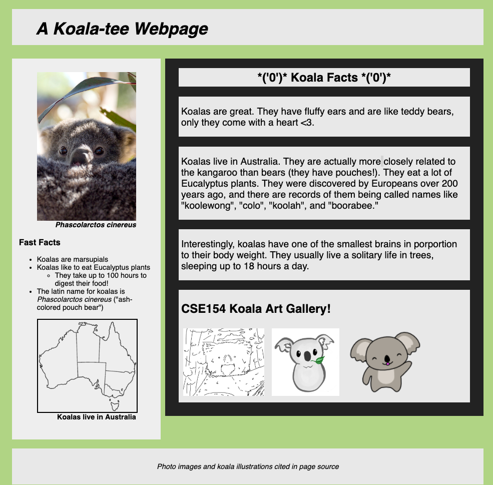
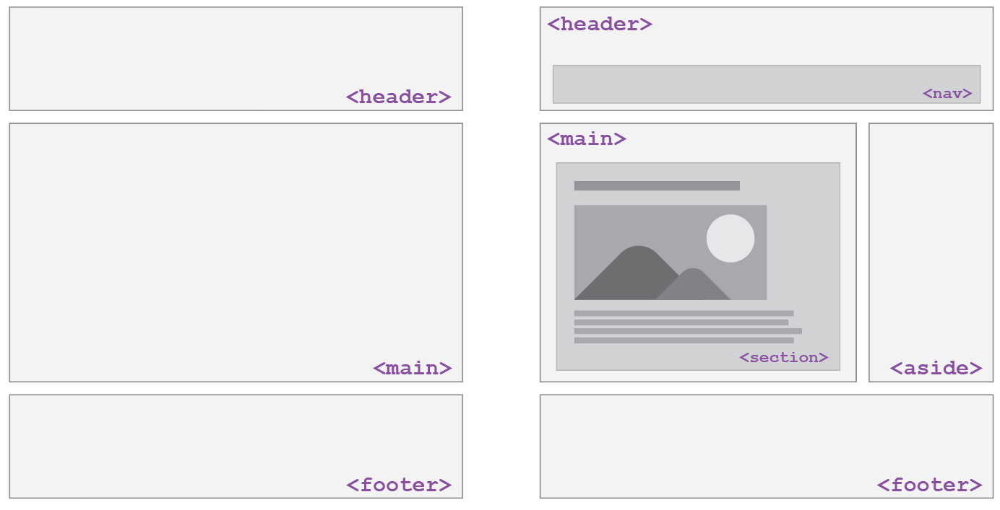
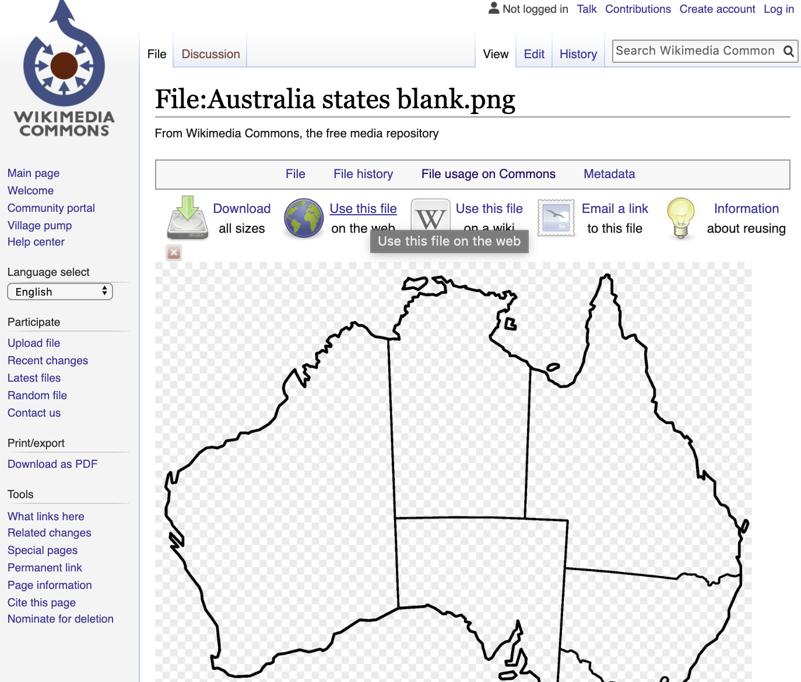
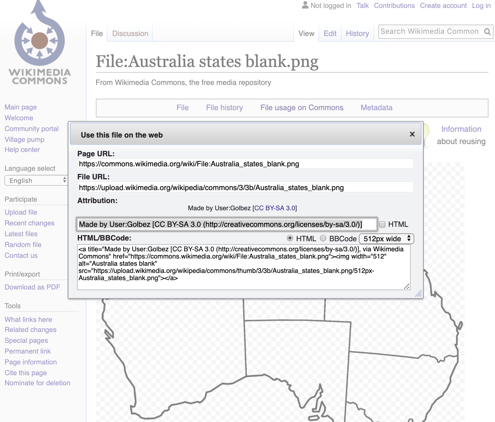

Lecture 2 Warmup
Use the following screenshot to work through the warmup, reviewing HTML tags from class/readings so far!
CSE 154
Lecture 2: More HTML, Accessible Design, and CSS Preview
Today's Agenda
Administrivia
Finish discussing HTML
- Yes really!
- but you should not feel like you will know everything yet
- and we do learn more as we delve deeper into CSS and JS
Discuss Accessible Design
Start CSS
Administrivia
WPL starts today after class (MOR 221)
Sections
- Sections will reinforce learning from lectures
- Quick Checks in Tuesday section starting next week
- Attend the section you are signed up for!
CP1 out - have fun, and remember that this is your opportunity to explore and get feedback for HW1 (released by tomorrow)
Also a reminder to sign up for Mentor Circles by Friday! (but the sooner the better)
Assignments
Creative Project 1
Due: Saturday, June 29th, 11:00 pm
GitGrade Lock: Monday July 1st, 11:00 pm
Homework 1
Out: Thursday Morning
Review: Internet
Things that are relevant
- There are layers
- IP = Internet Protocol, addresses like 192.168.0.1
- No centralized control but...
- DNS maps the numbers to names like Google.com
- W3C Validates web pages
- Websites use a client-server model over the Internet
From Wikipedia
{kind=link}
Review: Websites
Content

Words and images
Structure

HTML
Style

CSS
Behavior

JavaScript
More HTML
Hypertext Markup Language (HTML)
Describes the content and structure of information on a web page
- Not the same as the presentation (appearance on screen) - that's where CSS will come in!
There are a ton of HTML tags, but the most important thing is to use ones that are semantically appropriate, and meet current web standards.
MDN is really the only resource you should use outside of this class for looking up specific tags.
Basic Structure of an HTML Page
<!DOCTYPE html>
<html>
<head>
information about the page
</head>
<body>
page contents
</body>
</html>HTML
The <head> tag describes the page and the <body> tag contains the page's content
An HTML page is saved into a file ending with extension .html
The DOCTYPE tag tells the browser to interpret our page's code as HTML5, the lastest/greatest version of the language
Using HTML5 Semantic Tags to Define Structure
Image source: Hudson Gilmore (CSE154 TA!)
Tip when drafting HTML/CSS webpages
Always start with a sketch/wireframe before jumping into code!
A great resource on getting started with wireframes can be found here.
By the way... you don't need to be an artist.

General Outline with HTML5
General outline of a document body (template):
<body>
<header>
<!-- Header of the webpage body (e.g. logo, navigation bar) -->
</header>
<main>
<!-- Main section of the webpage body (where most content is) -->
</main>
<footer>
<!-- Footer of the webpage body (e.g. copyright info) -->
</footer>
</body>HTML
For different types of pages, you may have more elements (e.g. nav, aside), but these are the ones you should
follow as a guide for most of your webpages.
HTML vs Rendered Web Page
<!DOCTYPE html>
<html>
<head>
<title>Koala Fan Page</title>
</head>
<body>
<header>
<h1>A Koala-tee Webpage</h1>
</header>
<main>
<aside>
<!-- Left sidebar -->
</aside>
<section>
<!-- Koala facts (header and paragraphs)-->
<article>
<!-- Koala art gallery -->
</article>
</section>
</main>
<footer>
<!-- Image citations -->
</footer>
</body>
</html>HTML5 and Semantic Tags
<main>
Main content of the document - unlike <header> and <footer> tags, there can only be one main element in the <body>. The content inside should be unique and not contain content that is repeated across pages ( e.g. sidebars, nav link, search bars, etc.)
<header>
Header element - contains header information for page body or section/article, including logos, navigation bar, etc.
<footer>
Footer element - contains footer information for page body or section/article, including copyright infromation, contact, links, etc. Also often used with block quotes to cite sources (see CP1 about.html for an example!).
article vs section
We get this question a LOT
Others ask this too
Here are two resources to help you:
- Ian Devlin article (a course reading)
- Youtube video
Basically: Article should be standalone content. Section is not.
And remember: div div has no semantic meaning,
should only be added for selecting content in CSS/JS, and should be your "last resort".
Some Important HTML Details
HTML Tag Attributes
Some tags can contain additional information called attributes
- Syntax:
<element attribute="value" attribute="value"> content </element> - Example:
<a href="my-other-page.html">Next page</a>
Some tags don't contain content and can be opened and closed in one tag (self-closing)
- Syntax:
<element attribute="value" attribute="value" /> - Example:
<br />, <hr />, <br>, <hr> - Example:
<img src="bunny.jpg" alt="pic from Easter" />
Links (Anchors):
<a>
links, or "anchors", to other pages (inline)
<p>
Search for it on <a href="http://www.google.com/">Google</a>!
</p>HTML
Search for it on Google!
output
Uses the href (Hypertext REFerence) attribute to specify the destination URL
- Can be absolute (to another web site) or relative (to another page on this site)
Anchors are inline elements; must be placed in a block element such as
<p> or <h1>
Images:
<img>
Inserts a graphical image into the page
<img src="img/koala-with-leaf.png" alt="A Koala with a leaf" title="Logo"/>HTML

output
The src attribute specifies the image URL (relative or absolute)
Motivating alt text
HTML5 also requires an alt attribute describing the image, which
improves accessibility for users who can't otherwise see it.
The value of the alt attribute is also what you see if the image is not succesfully loaded.
<img src="img/koala-with-leaf-broken.png" alt="A Koala with a leaf" title="Logo"/>HTML

output
More About Images
<a href="https://courses.cs.washington.edu/courses/cse154/19su/">
<img src="img/cse154logo.png" alt="CSE154 Course Logo" title="Logo"/>
</a>HTML
If placed in an <a> anchor tag, the image becomes a link.
Relative vs. Absolute Paths for Links and Images
Relative paths are relative to the source document linking to the path. Examples:
- styles.css
- my-other-page.html
- img/koala-with-leaf.png
<img src="img/koala-with-leaf.png" alt="A Koala with a leaf" title="Logo"/>HTML
Absolute paths refer to a specific location of a file, including the domain. Example:
- https://validator.w3.org
<a href="https://validator.w3.org/">HTML Validator</a>HTML
Citing External Material
How to cite images that aren't yours?
<figure>
<!--
Image source: Wikipedia, Made by User:Golbez
[CC BY-SA 3.0 (http://creativecommons.org/licenses/by-sa/3.0/)]
-->
<img src="https://upload.wikimedia.org/wikipedia/commons/thumb/3/3b/Australia_states_blank.png/257px-Australia_states_blank.png"
alt="Koala-land map"/>
<figcaption>Koalas live in Australia</figcaption>
</figure>HTML
See slides below for how to get the citation image for this Wikimedia image.
In your CP's, you must cite all resources that were not original (and you should give your own images credits) either on the page (as in about.html or in a footer) and/or in the page source code.
More examples:
Getting the CC citation info from a public Wikimedia source
Getting the CC citation info from a public Wikimedia source
Nested Lists
A list can contain other lists:
<ul>
<li>Koalas are marsupials</li>
<li>Koalas like to eat Eucalyptus plants
<ul>
<li>
They take up to 100 hours to digest their food!
</li>
</ul>
</li>
<li>
The latin name for koalas is
<em>Phascolarctos cinereus</em>
("ash-colored pouch bear")
</li>
</ul>HTML
Note the text often introducing the nested list!
HTML Character Entities
a way of representing any Unicode character within a web page
| character(s) | entity |
|---|---|
| < > | < > |
| é è ñ | é è ñ |
| ™ © | ™ © |
| π δ Δ | π δ Δ |
| И | И |
| " & | " & |
- Complete list of HTML entities
- How would you display the text
&on a web page?
Example: HTML-encoding text
What if I wanted to put THIS into a rendered web page?
<p> <a href="http://google.com/search?q=Mowgli&ie=utf-8"> Search Google for Mowgli </a> </p>
output
To display the link text in a web page, its special characters must be encoded like this in the HTML:
<p>
<a href="http://google.com/search?q=Mowgli&ie=utf-8">
Search Google for Mowgli
</a>
</p>HTML
View the above output in this example
Practice: How can you fix this page to show <pre> using HTML entities?
References for more HTML Tags
You don't need to memorize all of the HTML tags, but should be able to use the right tag for the right purpose (semantics).
Refer to this slide deck for a list of the common tags you should know, and MDN's element reference for a much more comprehensive and detailed list (includes browser compatibility for each!)
Block and Inline Elements (explanation)
Block elements contain an entire large region of content
- Examples: paragraphs, lists, table cells
- The browser places a margin of whitespace between block elements for separation
Inline elements affect a small amount of content
- Examples: bold text, code fragments, images
- The browser allows many inline elements to appear on the same line
- Must be nested inside a block element
Block and Inline Elements: Example
<em>text</em>
<em>text</em>
<em>text</em>
<p>text</p>
<p>text</p>
<p>text</p>HTML
text text text
text
text
text
output
Rules and exceptions...
Block vs. inline:
-
Some block elements can contain only other block elements:
<body>,<form> -
<p>tags can contain only inline elements and plain text -
Some block elements can contain either:
<div>, <li>
Some elements are only allowed to contain certain other elements:
-
<ul>is only allowed to contain<li>(but<li>can contain<ul>for nested lists!)
Some elements are only allowed once per document:
<html>,<body>,<head>,<main>
Nesting Tags
Tags can "nest" inside of other tags
<body>
<p>
This is a <em>really, <strong>REALLY</strong></em> awesome paragraph.
And here's a neat list:
</p>
<ol>
<li>with one list item</li>
<li>with another list item</li>
</ol>
</body>HTML
This is a really, REALLY awesome paragraph. And here's a neat list...
- with one list item
- and another list item!
output
Incorrectly Nesting Tags
<p>
HTML is <em>really,
<strong>REALLY</em> lots of</strong> fun!
</p>
Incorrectly nested HTML
Tags must be correctly nested
- A closing tag must match the most recently opened tag
- The browser may render it correctly anyway, but it is invalid HTML
How would we get the above effect in a valid way?
<p>
HTML is <em>really,
<strong>REALLY lots of</strong></em> fun!
</p>Correctly nested HTML
How can we check? W3C HTML Validator
- Checks your HTML code to make sure it follows the official HTML syntax
- More picky than the browser, which may render bad HTML correctly
Example: Try validating validateme.html
NOTE: To receive full credit on your creative projects and homework assignments you MUST validate all of your files and pass with no errors.
Web Standards
Moreover, it is important to write proper HTML code and follow proper syntax
Why use valid HTML5 and web standards?
- More interoperable across different web browsers
- More likely that our pages will display correctly now and in the future
- To ensure accessibilty
Accessible Design
Slides based on content from Profs. Richard Ladner, Jake Wobbrock, and Andy Ko.
This is another great resource to learn more about why/how to make websites accessible!
Thinking about Accessibility as Web Developers
Who uses the web?
What are the different ways people visit and interact with websites?
Why is it important to think about users when developing websites?
Disabilities
Everyone has different abilities
Nearly 1 in 5 people have a disability in the U.S. (from the U.S. Census)
(Some) kinds of disabilities
from W3C Web Accessiblity Initiative (WAI)
- Visual
- Blind
- Low-Vision
- Color Blind
- Auditory
- Deaf
- Hard of Hearing
- Speech
- Ability to speak
- Speech impediments
- Physical
- Ability to Walk
- Ability to use hands or limbs
- Cognitive, learning, and neurological
- Dyslexia, dysgraphia, dyscalculia
- ADHD
- Memory loss
- Learning disabilities
- Behavioral
- Bipolar
Temporary and Situational Disability
Disabilties can be temporary
- having a broken arm in a cast
- difficulty hearing after a loud concert
Disabilties can be situational
- trying to open your door while carrying groceries
- trying to talk on the phone in a noisy room
- trying to read your phone under direct sunlight
Disability affects all of us
Accessible Design
Designs that account for all abilities are called accessible designs
Try your phone's screen reader!
Enable your phone's screen reader
- iOS: Settings > General > Accessibility > VoiceOver > Hit the switch
- Android: Settings > Accessibility > Talkback > Hit the switch
Input works differently now. For example, tap now reads the screen and double-tap selects. Use two or three fingers to scroll by page. Play with it for a minute.
Try closing your eyes and reading a webpage or a social networking site. Try writing an email.
Views of disabilities
Medical view
- Disabled people are patients who need treatment and/or cure.
Legal view
- Disabled people have rights and responsibilities, such as access to public buildings, voting, education, etc.
- Lawsuits can occur, but they should not be the motivating factor for making a system accessible
Sociocultural view
- Variation in ability is natural. "Disability" is caused by how society is designed, not by nature.
- Building for inclusion builds innovation (e.g., curb cuts, close captioning)
Tools and Resources
From the A11y Project
- A really great compendium of resources
- An accessibility workshop from GHC'18
Tools
- Web Accessability Evaluation Tool: http://wave.webaim.org/
- Color Schemes: http://colorbrewer2.org/
- Color blindness checker: http://www.color-blindness.com/coblis-color-blindness-simulator/
- Text readability: http://juicystudio.com/services/readability.php
Resources
- Web Content Accessibility Guidelines (something to know about when you apply for jobs): https://www.w3.org/WAI/intro/wcag
- Teach Access Tutorial (general background and covers an important standard called ARIA). http://teachaccess.org/initiatives/tutorial/
- Web design and development course by AccessComputing http://www.washington.edu/accesscomputing/webd2/
- A11ycast - YouTube Videos to teach developers how accessibility works.
Accessible Web Design Principles
- Use document structure (Semantic) tags: e.g.,
<article>,<strong> - Don't use deprecated style tags like
<b> - Provide metadata: e.g.,
<html lang="en"> - Provide alternatives: e.g., img alt tag, video captions, transcripts, allow both keyboard and mouse input
- Avoid directional text: eg. "the diagram on the right shows..."
Note: These design principles help in other ways as well
- Captions allow people to watch your video without turning sound on.
- Transcripts help people find your page through Google.
- Structure and metadata help programs understand your page.
More about HTML and accessibility here.
Preview to CSS
The Bad Way to Produce Styles
<p>
<font face="Arial">Welcome to Greasy Joe's.</font>
You will <b>never</b>, <i>ever</i>, <u>EVER</u> beat
<font size="+4" color="red">OUR</font> prices!
</p>
HTML
Welcome to Greasy Joe's. You will never, ever, EVER beat OUR prices!
output
Tags such as b, i, u and font are discouraged in strict HTML
Why is this bad?
- Accessibility
- Code organization
- Changing style easily
Cascading Style Sheets (CSS): <link>
<head>
...
<link href="filename" rel="stylesheet" />
...
</head>HTML (template)
<link href="style.css" rel="stylesheet" />HTML (example)
CSS describes the appearance and layout of information on a web page (as opposed to HTML, which describes the content)
Can be embedded in HTML or placed into separate .css
file (preferred)
Basic CSS Rule Syntax
selector {
property: value;
property: value;
...
property: value;
}CSS (template)
p {
color: red;
font-family: sans-serif;
} CSS (example)
A CSS file consists of one or more rules
A rule selector specifies HTML element(s) and applies style properties
- A selector of
*selects all elements